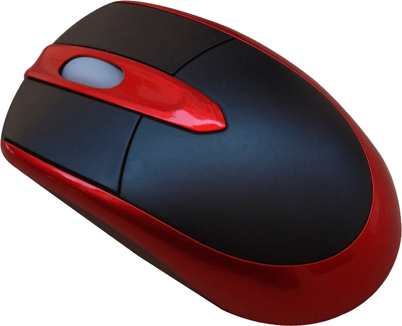
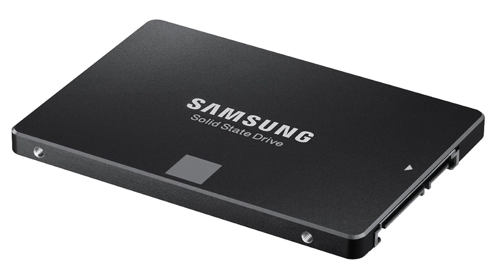
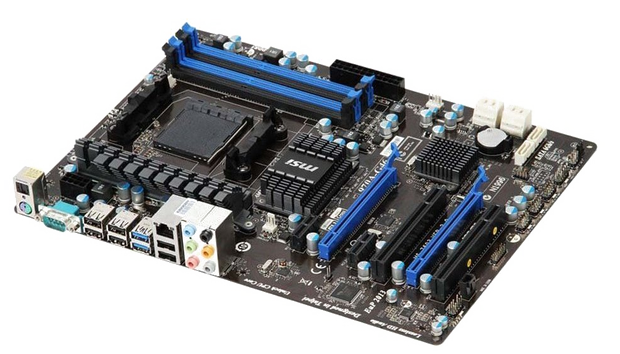

Central Processing Unit
Sitting at the helm of modern day computers, it's none other than the Central Processing Unit, or commonly known by the abbreviation CPU.
The CPU main functions are as follows:
- Performing basic arithmetic operations
- Performing logical operations
- Performing input/output operations
- Act as a controlling unit by directing the flow of operations
Keyboard and Mouse
A keyboard is a peripheral device that enables users to input text into a computer.
Having the same arrangement of the alphabetical keys as its predecessor, the manual typewriter,
the keyboard does more than just being a device for typing: its basically an interface for users
to "communicate" with their computers.
A mouse on the other hand is
a hand-held input device that controls the cursor on our computer screens.
More than that, whenever the mouse button is being clicked, electronic signals will be sent to the CPU
where it will decide on what operations to be carried out basing on the cursor's location on the screen.

Computer Screen
Computer screen, either a monitor or a laptop screen,
is an output device that displays information in pictorial or text form.
The first invented computer monitors were the cathode ray tube monitors, also known as CRT.
In the early 2010s, the switch to LCD monitors from CRT displays was gradual but inevitable. Then came LED and OLED monitors, like their predecessor, gradually taking
over the display market.
Hard Drive and Solid State Drive
These are secondary storage devices
of computers, where the CPU does not have direct access to the data stored. Two common secondary storages
are the Hard Drive and
Solid State Drive(SSD).
These devices store data inside the computer and ensure data are kept long term and not wiped off even after the power supply is shut off.

Random Access Memory Device
RAM, also known as Random Access Memory, is a form of computer memory
that allows reading and writing data items fast, like very fast, compared to the hard drive or SSD.
The hardware that made all this possible is non other than the RAM device, available in two forms either
SRAM or DRAM.
RAM is a form of primary memory storage where data items are directly accessible to the CPU.
Data memory stored in RAM devices are volatile, in other words, data will be wiped off when its power supply is shut off.
Hence the reason why RAM devices are used essentially for storing short term memory where data is stored as and when the processor needs it.
Graphics Processing Unit
The Graphics Processing Unit also known as GPU,
is a specialized electronic circuit designed to accelerate the formation of images on the display screen.
In the past, GPUs are mainly used for gaming, image rendering, video editing, cryptomining, and more recently, GPUs are used in machine learning.
Motherboard
Last but not least, the motherboard being equally as important as the CPU,
acts as a housing unit, providing sockets for components such as the CPU, harddrive,
RAM, external ports, etc, integrating and connecting the electrical circuitry between them.
